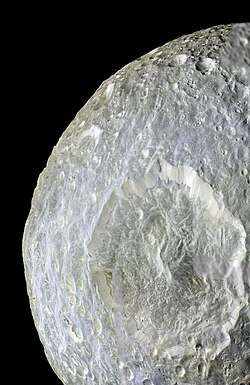

Mimas as seen by the Cassini orbiter
Mimas is the smallest of the seven gravitationally-rounded moons of Saturn.
It was discovered by William Herschel in 1789 and is named after a Greek mythological giant.
It is smaller than the irregularly-shaped moon of Neptune Proteus.
Despite its proximity to Saturn, it is not as geologically active as Enceladus and instead ahs one of the most cratered surfaces of any known planetary mass moon.
A distinctive feature is the crater Herschel, named after the discoverer of Mimas.
Because of it, the moon resembles the fictional Death Star in Star Wars.
Mimas was discovered by William Herschel in 1789 with his 40-foot telescope, the biggest at the time.
The name Mimas comes from the giant in Greek mythology who was killed by Ares in the Gigantomachy.
John Herschel, son of William Herschel, was the first to suggest naming satellites of Saturn after Titans and Giants, since Cronus (Greek analogue of the Roman Saturn) is their leader.
Orbit and rotation
Out of all the major moons of Saturn, Mimas orbits the closest to the planet with a semi-major axis of 185.5 km.
It is the tenth in order among all the satellites, between the orbits of Aegaon and Methone.
Mimas is responsible for clearing particles within Saturn's Cassini division.
Mimas orbits around Saturn for less than 23 hours, which also corresponds with its rotaional period, since it is tidally locked to Saturn.
It also has an eccentricity of 0.02 and an inclination of 1.6°.
Mimas is also in a 2:1 resonance with Tethys, and a 2:3 resonance with Pandora.
Some of the rings of Saturn are also resonant with Mimas.
Mimas is the smallest of the seven round moons of Saturn.
It has a mean diameter of 396.4 km, making it the smallest known gravitationally-round body in the Solar System.
It is smaller than multiple non-round objects, including the asteroids Vesta, Pallas, Hygiea, and the Neptunian satellite Proteus
Due to tidal forces, Mimas is significantly more oblate than the other round moons, having its longer equatorial axis 10% greater than its polar one.

Herschel crater in a false-color image by NASA's Cassini
Mimas has a very low density of 1.15 g/cm^3, suggesting a composition of mostly ice, with very small amounts of rock.
It is anomalous how Mimas is geologically inactive unlike Enceladus, even though both are in close proximity to Saturn, are in mean-motion resonance with another larger moon beyond their orbits, and that Mimas has a slightly greater eccentricity.
Observations of the slower apsidal precession of Mimas suggest that it is not completely solid and that a subsurface ocean could exist below the surface in spite of the ancient surface.
The lack of geological surface features on Mimas thus means that the ocean is young.
The surface of Mimas is heavily cratered and lacks features created by internal forces.
The largest impact crater on Mimas is the Herschel crater, 136 km in diameter.
It is the third in relative size among planetary moons, behind South Pole-Aitken basin on the Moon and Odysseus on Tethys.
The central peak formed after the impact is 7 km tall.
On the other side of Mimas, several chasms (chasmata) have formed, likely a result from the impact.
In popular culture, this crater makes Mimas resemble the fictional Death Star in the Star Wars franchise, but it has not inspired its design, since the movie preceded the first pictures of the feature.
Mimas has been visited by several missions.
Pioneer 11 was the first to make a flyby, but at a great distance of 104 thousand kilometers.
Voyager 1 sent back the first images of Mimas, includiing the iconic Herschel crater.
Voyager 2 also made a flyby the next year.
The closest flyby was that of the Cassini orbiter, which passed at 9,500 km.
External links
{% include catnatural-satellites.html %}